Architecture diagram showing the multi-AZ web infrastructure with Application Load Balancer, Auto Scaling EC2 instances, and RDS database.
This project demonstrates the design and implementation of a production-style 3-tier web architecture on AWS. The goal was to build a secure and resilient cloud infrastructure capable of handling instance failures while maintaining application availability through Auto Scaling, Load Balancing, and Multi-AZ database replication.
The infrastructure follows a traditional three-tier architecture pattern. Incoming user traffic is handled by an Application Load Balancer, distributed across EC2 instances managed by an Auto Scaling Group, and persisted in a highly available Amazon RDS MySQL database.
User → Application Load Balancer → EC2 (Auto Scaling) → RDS MySQL
A custom VPC was created to isolate the application environment and allow fine-grained network control.
VPC CIDR: 10.0.0.0/16
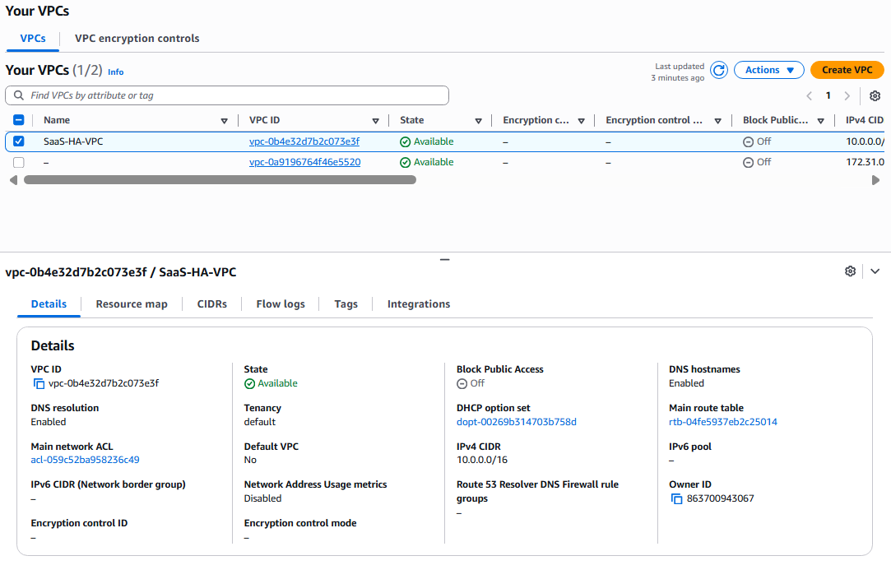
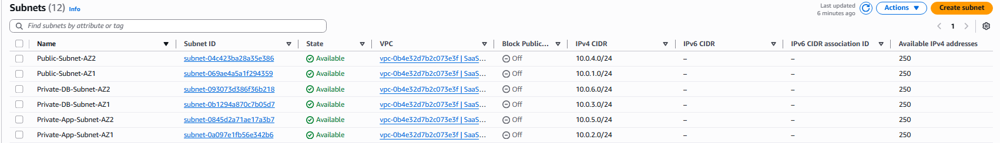
An Internet Gateway was attached to the VPC to allow public access to the load balancer. Private subnets use a NAT Gateway for outbound internet connectivity while remaining inaccessible from the internet.
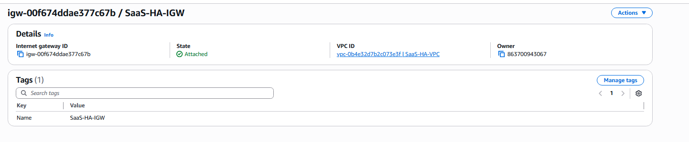

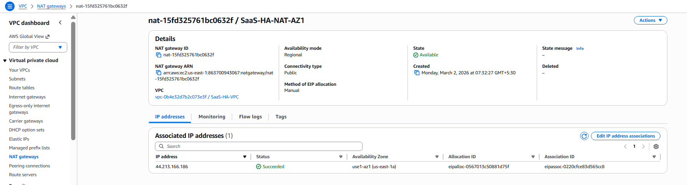
Security groups were configured using a layered access model so each tier only communicates with the required upstream component.
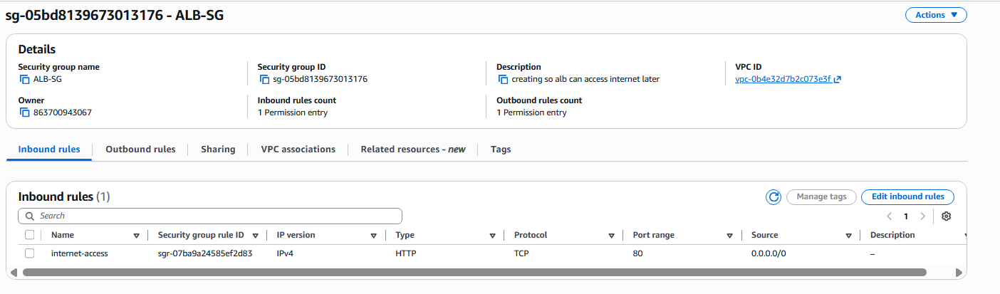
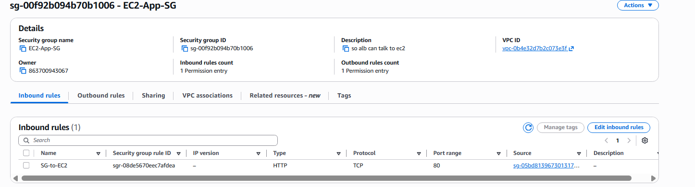
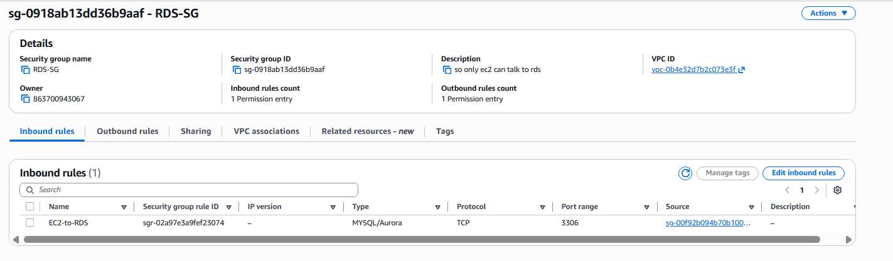
A Launch Template was created to automatically configure EC2 instances with Apache, PHP, and MySQL client tools during startup.

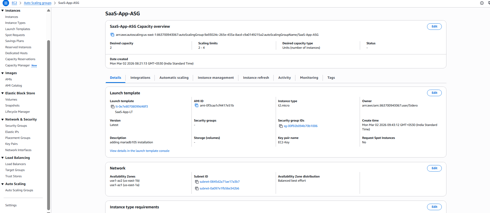
An Application Load Balancer distributes incoming traffic across healthy instances registered within a target group.
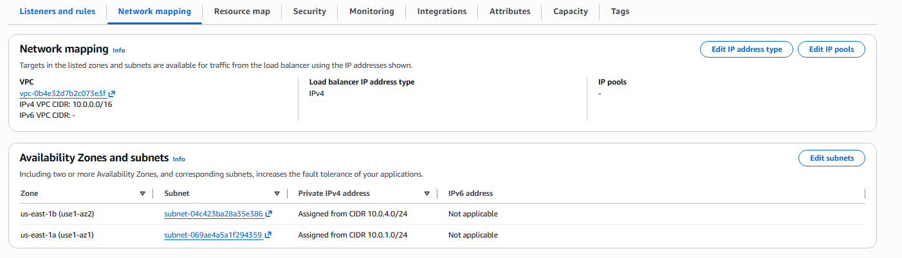
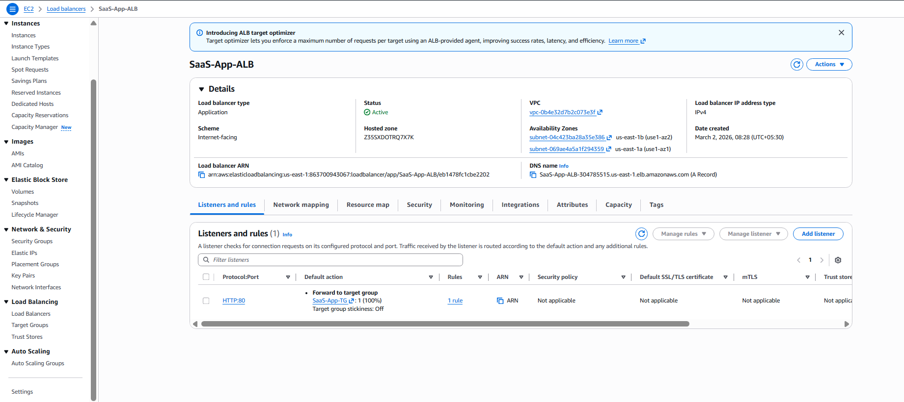
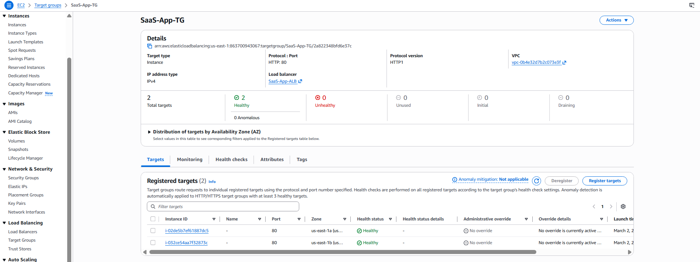
Amazon RDS MySQL was deployed in Multi-AZ mode to provide automatic failover and high availability.
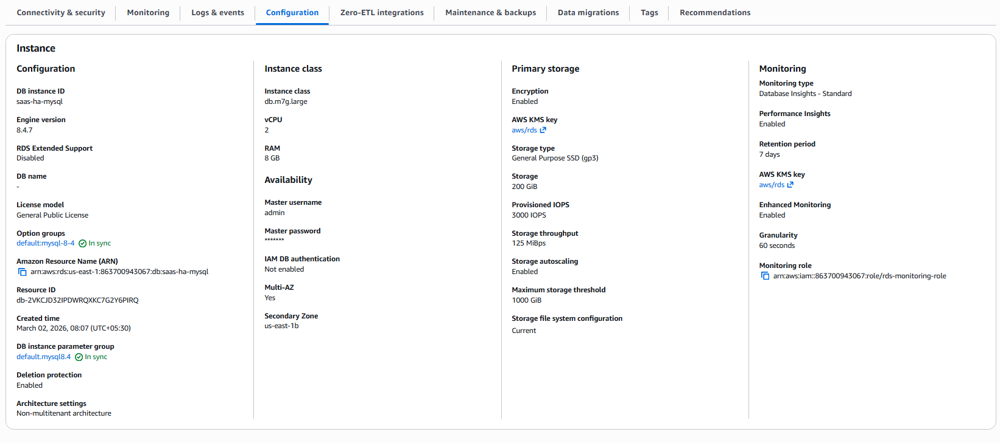
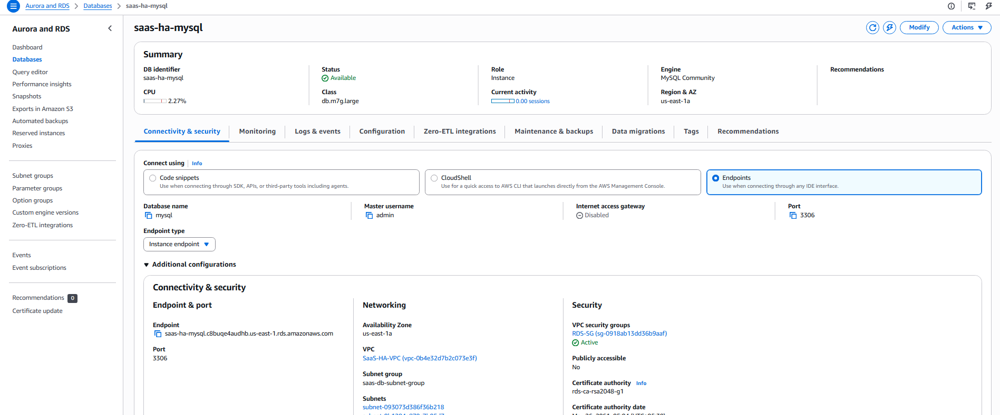
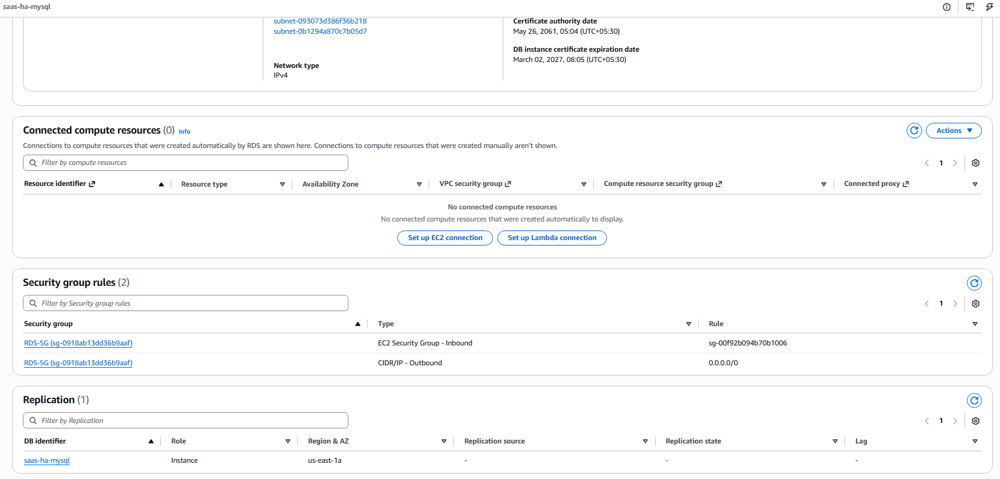
Instead of opening SSH access, instances were managed using AWS Systems Manager Session Manager.
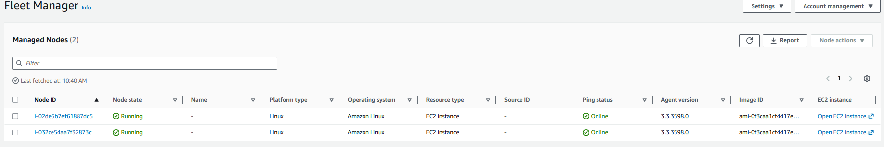
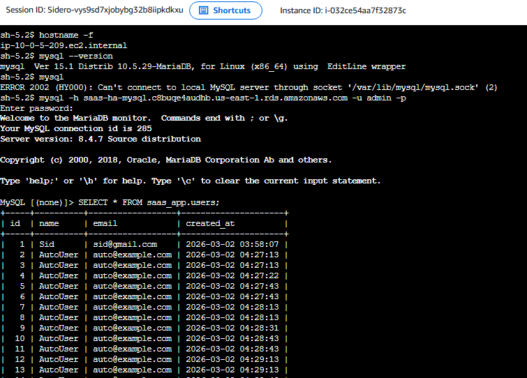
A PHP application was deployed on the EC2 instances to validate database connectivity and confirm that the system functioned end-to-end.
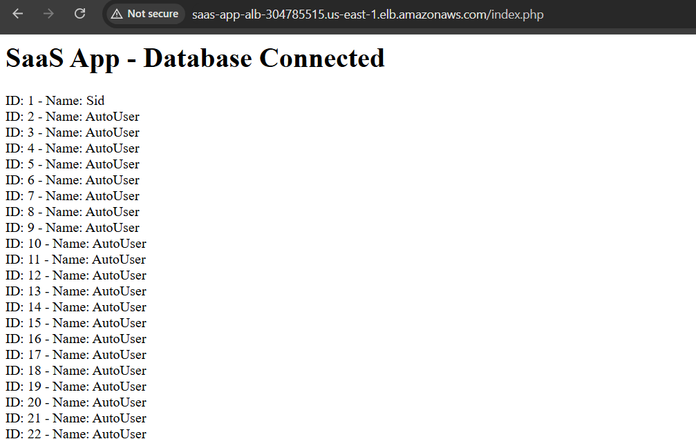
To validate system resilience, an EC2 instance was manually terminated. The Auto Scaling Group automatically launched a replacement instance, while the load balancer continued routing traffic to healthy targets.
Database records remained intact due to the RDS Multi-AZ configuration, demonstrating separation of stateless compute and persistent storage.
After testing was completed, all resources including NAT Gateway, RDS instances, Auto Scaling Groups, Load Balancers, and the VPC were safely deleted to prevent ongoing charges.
The architecture successfully demonstrated a resilient cloud infrastructure capable of handling instance failures, distributing traffic across availability zones, and maintaining persistent database storage.